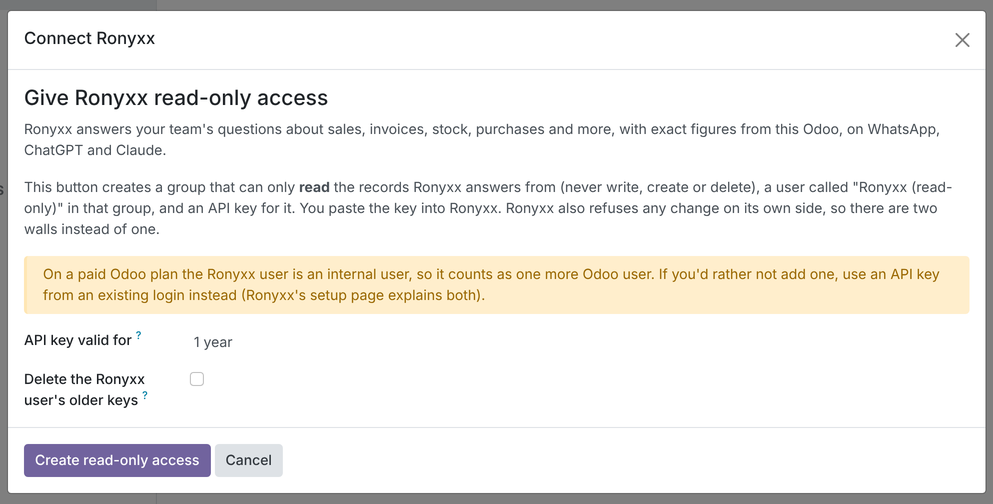
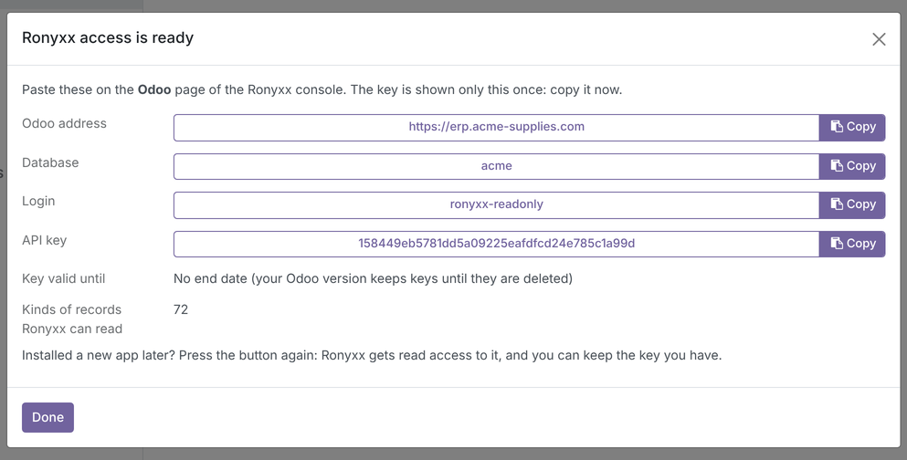

Ask your Odoo anything
Ronyxx answers your team's questions with exact figures from your own Odoo, on WhatsApp, ChatGPT and Claude: what customers owe, sales last month, what's in stock, what to reorder. This free app gives Ronyxx read-only access in one click.
What the app does
Under Settings > Connect Ronyxx, one button:
- creates a group called Ronyxx read-only that can read the records Ronyxx answers from, and can't write, create or delete anything. It covers the apps your database has; press it again after installing an app;
- creates a user called Ronyxx (read-only) in that group, with no password, so nobody can sign in to Odoo with it;
- makes an API key for that user and shows it once, with your Odoo address and database name, ready to paste into Ronyxx.
It replaces about 15 minutes of manual setup: a group, imported access rights and record rules, a user and a key.


Read-only, twice over
Ronyxx's own server refuses any request that would change your Odoo before it is sent. With this app, your Odoo refuses changes from the Ronyxx user too. Each person in your team gets only the answers their role in Ronyxx allows. Every figure is calculated by Ronyxx's tested code from your records; the AI only reads the question.
What is shared, and when
This app sends nothing anywhere by itself. Ronyxx is an outside service: it reads your Odoo only after you paste the key into your Ronyxx account, and only to answer the questions your team asks. You can end its access at any time by deleting the key or uninstalling this app. Ronyxx's privacy policy and security details are on ronyxx.com.
How to connect
- Install the app, then open Settings > Connect Ronyxx.
- Press Create read-only access and confirm your password.
- Copy the address, database, login and key into the Odoo page of your Ronyxx account (sign up at ronyxx.com).
Good to know
- Works on Odoo 16, 17, 18 and 19, Community and Enterprise, on Odoo.sh and your own server. Odoo Online (odoo.com) doesn't allow outside apps; there, Ronyxx connects with an API key from an existing login.
- On a paid Odoo plan, the Ronyxx user is an internal user, so it counts as one more Odoo user.
- On Odoo 18 and later you choose how long the key lasts (90 days, a year, or no end date); Ronyxx emails you before it ends.
- Uninstalling the app archives the Ronyxx user and deletes its keys, so Ronyxx's access ends at once.
Questions: support@ronyxx.com